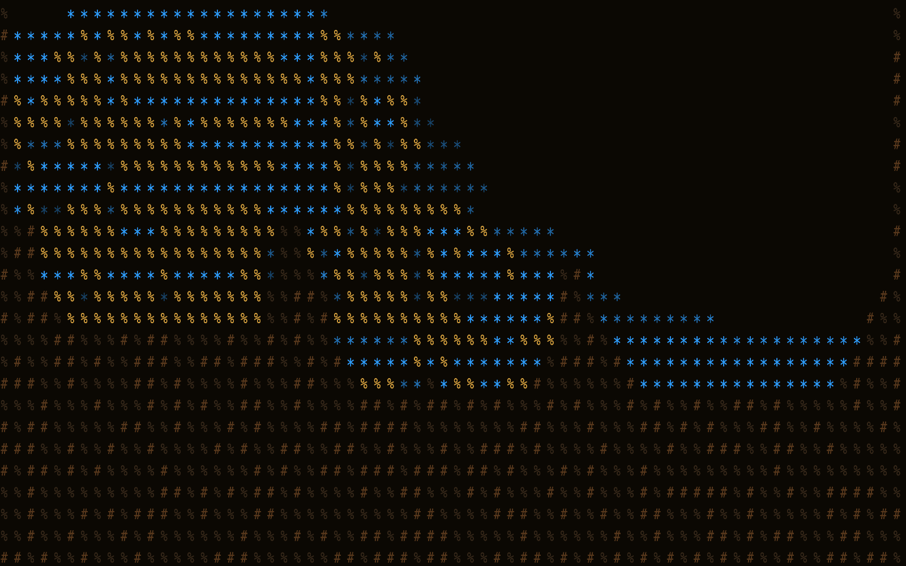
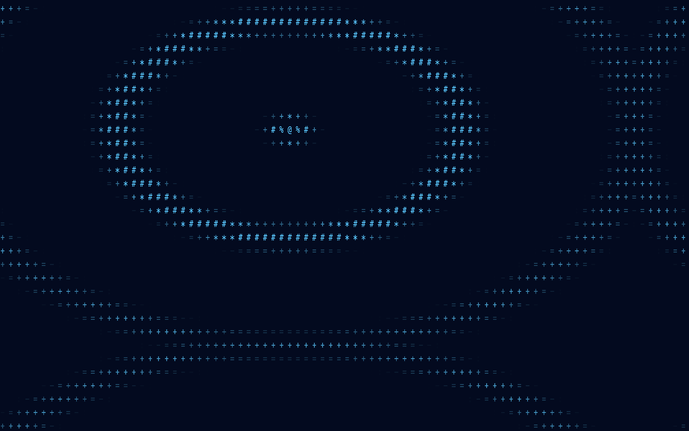

Screen saver for macOS 26 and newer
A screen saver made of animated characters.
Turn procedural scenes or a live camera into a Metal-rendered field of animated characters.
brew install --cask codeswhat/tap/idlescreen
Signed and notarized. Gatekeeper and System Integrity Protection stay enabled.
Screenshots
What it looks like.


Real frames from IdleScreen's renderer, captured offscreen.
Patterns
18 procedural patterns, plus sand and water.
Each pattern is drawn as a field of characters. Pick one, or use Auto Cycle to step through them.
- Perlin Noise
- Plasma
- Sweep
- Rain
- Rainbow Cycle
- Fire Effect
- Ripple
- Voronoi
- Warp
- Static
- Pulse
- DVD Bounce
- Metaballs
- Starfield
- Spiral Galaxy
- Terrain
- Rain on Glass
- Aurora
Pixel Materials
Pixel Materials runs sand and water simulations with deterministic scene state. The terrain and world edges stay stable when a view is recreated or the displays change.
Saved Looks keep your settings. Controls cover color, scale, contrast, motion, terrain, materials, camera choice and mirroring.
Camera mode
Your camera, as characters. Frames stay local.
Camera mode renders the live camera feed through the same character renderer. If a frame is missing or stale, the renderer falls back to a procedural scene. It recovers after permission or device changes.
- Only the camera agent touches the camera. A separately signed, sandboxed agent owns the whole camera lifecycle. Nothing else in the app links AVFoundation or opens a camera.
- Frames stay on your Mac. They pass through a fixed-size local mailbox. They aren't sent over the network, written to logs, or kept as test evidence.
- It stops when nobody's using it. Capture starts with the first valid request and stops after the last one ends.
- You choose when it asks. Camera access is requested only when you explicitly choose a camera effect.
Multiple displays
One scene, one each, or one in focus.
- Panorama
- One scene stretched across all your displays.
- Per Display
- An independent scene on each display.
- Focus Display
- One display gets the active scene. The others get a quieter treatment.
The companion app's preview and the screen saver use the same display plan, so what you set up is what you get.
Agent signals
Optional Codex and Claude status.
Turn on the Codex or Claude integration and the saver can show an expiring status overlay for agent activity. It goes through the bundled idlescreenctl command, and every signal expires.
The signal carries a status only. No prompts, transcripts, commands or responses go in, and there's no network listener.
Install
Get it.
Download the signed, notarized DMG from the latest release, or install the Homebrew cask:
brew install --cask codeswhat/tap/idlescreen
Open IdleScreen once, then select it in System Settings under Wallpaper and Screen Saver. Upgrade with brew upgrade --cask idlescreen or remove it with brew uninstall --cask idlescreen.
Requirements
- macOS 26 Tahoe or newer.
- A universal build for Apple silicon and Intel.
- A camera, only if you want camera mode.
Not verified on a device
Some paths have automated or fixture coverage only, including sleep and wake, camera permission changes and Intel Macs. If one breaks for you, please open an issue. The README keeps the current list.
FAQ
Quick answers.
Does it send my camera frames anywhere?
No. Frames stay in a local mailbox on your Mac. They aren't sent over the network or written to logs.
Do I have to use the camera?
No. The camera is asked for only when you choose a camera effect. The procedural patterns and Pixel Materials don't need it.
Why is the install path lowercase?
macOS lists the app, the screen saver and the camera agent as IdleScreen in System Settings. The installed path and the Homebrew cask name stay lowercase: /Applications/idlescreen.app.
Does it run on Intel Macs?
The build is universal, but Intel hasn't been verified on a device yet.
Where do I report a bug?
Use GitHub Issues. Report vulnerabilities privately through the security policy.
Project
Open source, MIT.